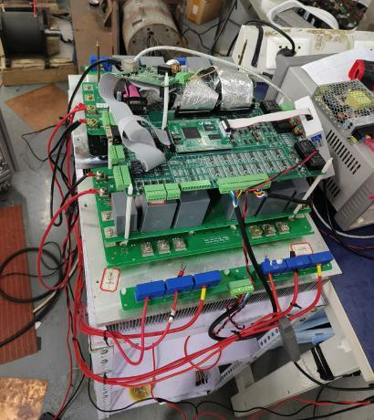

Data center optimization
Optimization methods for data center operation.
PERSONAL ACADEMIC HOMEPAGE
Master’s student · Electrical Engineering
Huazhong University of Science and Technology
I am a master’s student in the Department of Power Engineering, School of Electrical and Electronic Engineering at HUST. My current research focuses on data center optimization and graph neural network acceleration for large-scale unit commitment. My earlier work involved electrical measurement, time-series modeling and active EMI filters.
Optimization methods for data center operation.
Graph neural networks for accelerating large-scale unit commitment optimization.
HUST undergraduate research fund
Led research on online assessment using multivariate dynamic time-series data, with a focus on electrical measurement equipment.
National undergraduate innovation program · Completed
Led an undergraduate research project on high-performance active electromagnetic interference filters.

IEEE Xplore
Transient-current reconstruction using long short-term memory neural networks.
Paper on IEEE XploreConference paper
Time-series modeling and multiobjective evolutionary optimization for online voltage-transformer measurement estimation.
Huazhong University of Science and Technology
Department of Power Engineering
School of Electrical and Electronic Engineering
Huazhong University of Science and Technology
Electrical Engineering and Automation
Second Prize · Provincial round
Bronze Award · Provincial round